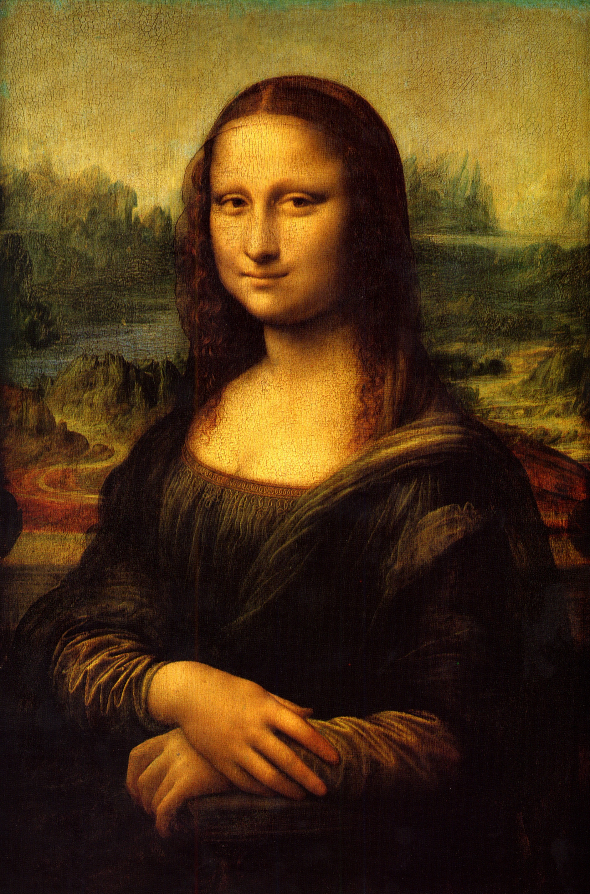
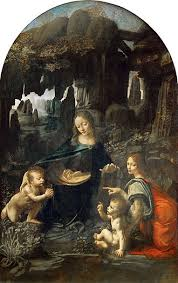
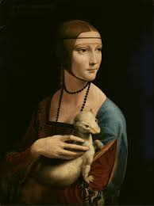
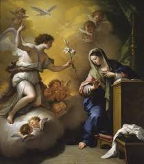
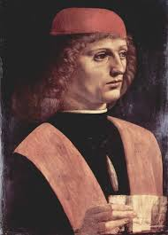
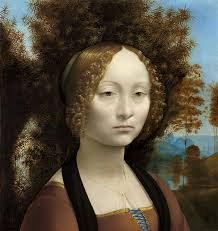
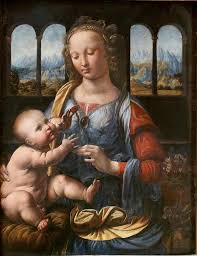
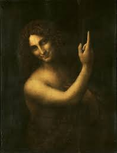

Obras Destacadas de Leonardo da Vinci

La Mona Lisa
Retrato de Lisa Gherardini, famosa por su enigmática sonrisa y técnica de sfumato.

La Última Cena
Representación de la última cena de Jesús con sus apóstoles, destacada por su composición y perspectiva.

El Hombre de Vitruvio
Estudio de las proporciones del cuerpo humano, símbolo de la unión entre arte y ciencia.

La Virgen de las Rocas
Dos versiones que muestran a la Virgen María en un entorno rocoso, destacando el uso del claroscuro.

La Dama del Armiño
Retrato de Cecilia Gallerani sosteniendo un armiño, ejemplo de retrato renacentista.

La Anunciación
Escena bíblica con la Virgen María y el ángel Gabriel.

El Músico
Retrato inacabado de un joven con una partitura.

Ginevra de' Benci
Uno de los primeros retratos femeninos de Leonardo.

Madonna del Clavel
Virgen con el Niño en una escena serena y simbólica.

San Juan Bautista
Última pintura de Leonardo, con expresión enigmática y fondo oscuro.